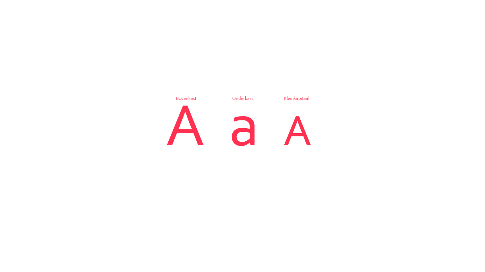
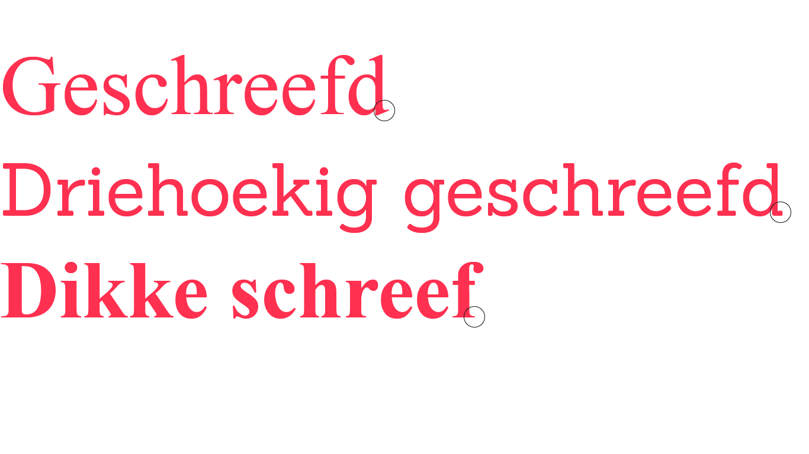
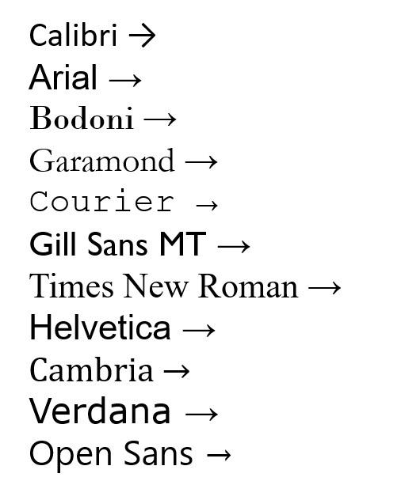

Boven- en onderkast
Een eerste onderscheid in de bouw van letters is het verschil tussen kapitalen of bovenkast - en onderkastletters, met andere woorden hoofdletters en kleine letters.
Deze benaming komt voort uit de zetkast van drukkerijen uit de 15de eeuw. De zetter had in de zetterij meerdere kasten (laden) met loden letters in allerlei soorten en maten. Kleine letters lagen in de onderste kast, hoofdletters in de bovenste kast.
Zo ontstonden de begrippen onderkast (= kleine letters) en bovenkast (= hoofdletters of kapitalen).

Schreefloos of geschreefd
Letters zonder voetje noemen we schreeflozen, letters met voetje schreven.
De schreven van letters hebben een groeperende werking. Schreven helpen de lezer bij het lezen van woorden. We lezen immer woorden en geen letters:
"Het sijhcnt neit zeeovl uit te meakn in wleke vrolgode de letrtes van een worod satan. Als de eestre en de ltatsae letetr op de jsitue paatls saatn kun je de mesete wreoodn zednor peobmerln leezn. Dit kmot ddaorot je hrneesen geen aarpte ltretes leezn, maar hlee woredon."
Schreven hebben een betere leesbaarheid dan schreeflozen omdat zij het oog een horizontale houvast bieden. Hierdoor geven ze ons een rustige indruk en helpen de aandacht vast te houden.
Schreeflozen hebben vooral een verticale werking. Het oog heeft daarom geen houvast en valt als het ware door de tekst.
Soorten schreven

De stand van een letter of de letterhelling
Een derde uiterlijk kenmerk waarin letters zich van elkaar onderscheiden is de letterhelling, anders gezegd italic of cursief.
Helaas leest een letter in italic minder vlot. Schuin heeft steeds iets afwijkend, daarom gebruikt men deze naar rechts hellende letter om iets te accentueren.
Favpng.com
Lettergradatie
De gradatie- of gewichtsverschillen worden bepaald door de verschillen in lijndikte of lijnvoering.
Er zijn verschillende soorten:
huisstijl.brabant.nl/lettertype
Font
Een andere benaming voor font is lettertype. Font wordt ook als term gebruikt op je computer als je een andere lettersoort wil gebruiken.

Reddit.com